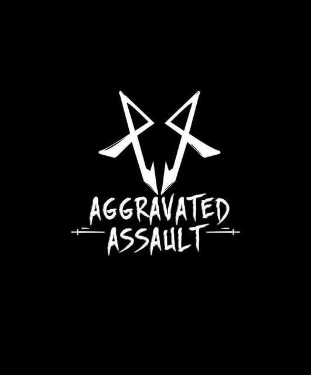
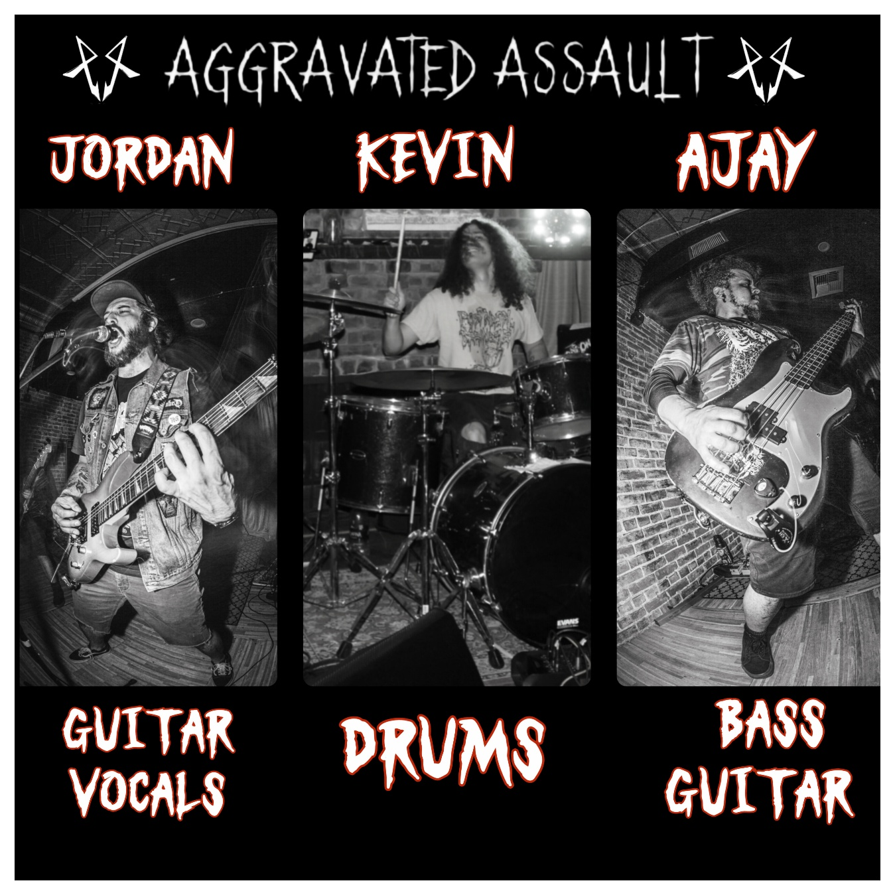

Aggravated Assault
Northern California Thrash Metal · Fairfield, California

Forged in Fairfield, California, Aggravated Assault delivers a relentless blend of old-school Bay Area thrash, modern aggression, and uncompromising live energy.
Drawing inspiration from the pioneers of heavy metal while carving out a sound that is unmistakably their own, the band has quickly earned a reputation for explosive performances, technical musicianship, and a commitment to keeping authentic thrash alive for a new generation.
With the release of their debut full-length album, The Order of Chaos, Aggravated Assault has established themselves as one of Northern California's rising heavy acts. Their music combines crushing riffs, precision rhythm, soaring solos, and commanding vocals into songs built equally for dedicated metal fans and unforgettable live shows.
Every performance is driven by intensity. Whether playing intimate clubs or larger festival stages, Aggravated Assault approaches every show with the same goal: give the audience more than they expected.
Jordan — Guitar / Vocals
Kevin — Drums
Ajay — Bass / Guitar
Festivals · Clubs · Supporting Tours · Regional Dates · National Dates